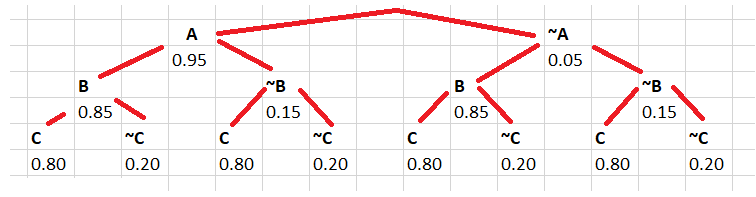
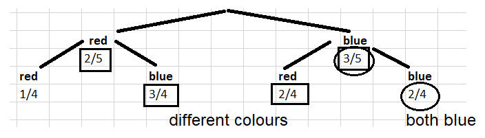

Laskusääntöjä
Contents
Laskusääntöjä#
Kun lasketaan todennäköisyyksiä, jotka liittyvät hieman monimutkaisempiin tilanteisiin kuin eriväristen pallojen nostamiseen pussista, tarvitaan muutamia laskusääntöjä. Laskusäännöt ovat yksinkertaisia yhteen-, vähennys-, kerto- ja jakolaskuja. Hankalinta niiden käytössä on ymmärtää, mitä sääntöä milloinkin pitäisi käyttää. Jotkut säännöt voivat olla jopa hieman intuition vastaisia.
Komplementtisääntö#
Todennäköisyyslaskennassa tapahtuman \(A\) vastatapahtumaa, “ei \(A\)”, sanotaan tapahtuman A komplementiksi. Tapahtuman \(A\) komplementtia merkitään \(\sim A\) tai \(A^C\). Tapahtuman ja sen komplementin summa on yksi (siis varmasti asia \(A\) joko tapahtuu tai ei tapahdu). Sääntö on siis
\(P(A^C)=1-P(A)\).
Esim. Sääennusteen mukaan huomenna sataa 17 % todennäköisyydellä. Millä todennäköisyydellä ei sada?
Ratkaisu
\(P(\text{ei sada}=1-P(\text{sataa})=1-0.17 = 0.83\).
Riippumattomien tapahtumien kertolaskusääntö#
Jos \(A\) ja \(B\) ovat kaksi toisistaan riippumatonta tapahtumaa, niin todennäköisyys sille, että ne molemmat tapahtuvat, on niiden tulo
\(P(A~\text{ja}~B)=P(A)\cdot P(B)\)
Tässä tärkeää on, että tapahtumilla \(A\) ja \(B\) ei ole minkäänlaista vaikutusta toisiinsa. Laskusääntö voidaan yleistää myös useammalle kuin kahdelle tapahtumalle. Tällöin kaikki todennäköisyydet kerrotaan keskenään.
Esim. Koulumatkalla on kahdet liikennevalot, jotka toimivat riippumatta toisistaan. Kokemuksesta tiedetään, että todennäköisyys sille, että 1. liikennevalo on punainen, on 20 %. Todennäköisyys sille, että 2. liikennevalo on punainen, on 50 %. Mikä on todennäköisyys sille, että molemmat molempiin valoihin joutuu pysähtymään?
Ratkaisu
Todennäköisyys sille, että molemmat valot näyttävät punaista on
\(P(\text{1. punainen ja 2. punainen})=P(\text{1. punainen})\cdot P(~\text{2. punainen})=0.20\cdot 0.50=0.10=10 \%\)
Yhteenlaskusääntö#
Tarkastellaan kahta tapahtumaa, \(A\) ja \(B\). Todennäköisyys sille, että jompikumpi niistä tapahtuu, lasketaan yhteenlaskusäännöllä. Säännöstä on olemassa kaksi eri versiota riippuen siitä, voivatko molemmat asiat tapahtua yhtä aikaa, vai sulkeeko toinen tapahtuma toisen pois.
Kun tapahtumat \(A\) ja \(B\) voivat tapahtua yhtä aikaa, niin
\(P(A~\text{tai}~B)=P(A)+P(B)-P(A~\text{ja}~B)\)
Esim. Korttipakasta nostetaan kortti. Millä todennäköisyydellä kortti on pata tai kuvakortti?
Ratkaisu
Korttipakassa on 52 korttia. Niistä 13 on patoja ja 12 kuvakortteja. Lisäksi 3 korttia on yhtä aikaa patoja ja kuvakortteja. Tapahtumat “pata” ja “kuvakortti” eivät siis sulje toisiaan pois.
\(P(\text{pata tai kuva})=P(\text{pata})+P(\text{kuva})-P(\text{pata ja kuva})\)
\(P(\text{pata tai kuva})=\frac{13}{52}+\frac{12}{52}-\frac{3}{52}=\frac{22}{52}=42~\%\)
Huom! Todennäköisyyden \(P(\text{pata ja kuva})\) voi päätellä suoraan korttien lukumääristä, tai laskea:
\(P(\text{pata ja kuva})=P(\text{pata})\cdot P(\text{kuva})=\frac{13}{52}\cdot \frac{12}{52}=\frac{3}{52}\).
Kun \(A\) ja \(B\) eivät voi toteutua yhtä aikaa, niin
\(P(A~\text{tai}~B)=P(A)+P(B)\)
Esim. Korttipakasta nostetaan satunnainen kortti. Millä todennäköisyydellä kortti on pata tai hertta?
Ratkaisu
Vaihtoehdot sulkevat toisensa pois. Sama kortti ei voi olla yhtä aikaa pata ja hertta.
\(P(\text{pata tai hertta})=P(\text{pata})+P(\text{hertta})=\frac{13}{52}+\frac{13}{52}=50~\%\)
Laskusääntöjä voidaan nyt yhdistellä seuraavan esimerkin mukaisesti. Esimerkissä on myös graafinen malli laskelmien tueksi.
Esim. Koulussa on 3 kopiokonetta: A, B ja C. Todennäköisyydet sille, että kukin niistä toimii satunnaisesti valitulla hetkellä, ovat eri koneille seuraavat: A 0.95, B 0.85, C 0.80. Laske todennäköisyydet sille, että
a) kaikki kopiokoneet toimivat, b) ainakin kaksi kopiokonetta toimii, c) mikään kopiokoneista ei toimi.
Ratkaisu
Piirretään avuksi todennäköisyyspuu, jossa jokainen taso kuvaa yhtä kopiokonetta, ja jokainen reitti (ylhäältä alas) yhtä mahdollista tapahtumien sarjaa. Puussa esimerkiksi \(A\) tarkoittaa sitä, että kopiokone A toimii, ja merkintä \(~A\) tarkoittaa sitä, että kopiokone A ei toimi. Toimimattomuuden todennäköisyys eri kopiokoneille saadaan komplementtisäännön avulla, sillä kone joko toimii tai ei toimi.

a) Kopiokoneiden toiminnan oletetaan olevan toisistaan riippumatonta. Jotta tilanne ”kaikki toimivat” toteutuisi, pitää jokainen koneista erikseen toimia. Käytetään siis riippumattomien tapahtumien kertolaskusääntöä.
\(P(\text{kaikki toimivat})=P(\text{A toimii ja B toimii ja C toimii})=0.95\cdot 0.85 \cdot 0.80=0.646=65~\%\)
b) Tilanne “ainakin 2 toimii” voidaan saavuttaa neljällä eri tavalla: ”kaikki toimivat”, ”A ja B toimivat mutta C ei”, ”A ja C toimivat mutta B ei”, ”B ja C toimivat mutta A ei”. Nämä vaihtoehdot ovat toisensa poissulkevia, joten käytetään toisensa poissulkevien tapahtumien yhteenlaskusääntöä. Lisäksi jokaisessa vaihtoehdossa tarvitaan vielä riippumattomien tapahtumien kertolaskusääntöä.
\(P(\text{ainakin 2 toimii})=P(A,B,C)+P(\sim A,B,C) + P(A,\sim B,C)+P(A,B,\sim C)\)
\(P(\text{ainakin 2 toimii})=0.646+0.05\cdot 0.85\cdot 0.80+0.95\cdot 0.15\cdot 0.80+0.95\cdot 0.85\cdot 0.20\)
\(P(\text{ainakin 2 toimii})=0.956=96~\%\)
c) \(P(\text{mikään ei toimi})=P(\sim A,\sim B,\sim C)=P(\sim A)\cdot P(\sim B)\cdot P(\sim C)\)
\(P(\text{mikään ei toimi})==0.05\cdot 0.15 \cdot 0.20 = 0.0015=0.2 %~\%\)
Ehdollinen todennäköisyys#
Jos tapahtuman \(A\) todennäköisyys riippuu tapahtumasta \(B\), niin
\(P(\text{A ja B})=P(A│B)\cdot P(B)\),
missä \(P(A│B)\) on todennäköisyys sille, että tapahtuma \(A\) tapahtuu, kun tapahtuma \(B\) on jo tapahtunut. Tälle todennäköisyydelle ei ole mitään erityistä laskukaavaa, vaan se päätellään tilanteesta.
Esim. Laatikossa on 3 sinistä ja 2 punaista palloa. Henkilö ottaa laatikosta katsomatta kaksi palloa peräkkäin siten, että ensimmäistä palloa ei laiteta takaisin laatikkoon. Laske todennäköisyys sille, että
a) molemmat pallot ovat sinisiä, b) pallot ovat keskenään eri värisiä.
Ratkaisu
Piirretään avuksi todennäköisyyspuu ja merkitään sinne eri kohtiin, kuinka paljon eri värisiä palloja on eri tapahtumien jälkeen jäljellä.

a) \(P(\text{sin. ja sin.})=P(\text{1. sin. ja 2. sin.})= P(\text{2. sin.}│\text{1. sin.})\cdot P(\text{1. sin.})=\frac{2}{4}\cdot \frac{3}{5}=0.3=30~\%\)
b) \(P(\text{eri väriset})=P(\text{pun. ja sin.})+P(\text{sin. ja pun.})= P(\text{2. sin}|\text{1. pun.})+P(\text{2. pun.}|\text{1. sin.})\)
\(P(\text{eri väriset})=\frac{3}{4}\cdot \frac{2}{5}+\frac{2}{4}\cdot \frac{3}{5}=\frac{6}{20}+\frac{6}{20}=\frac{12}{20}=\frac{6}{10}=60~\%\)
Kokonaistodennäköisyyden laki#
Oletetaan, että opiskelijan menestyminen tentissä riippuu voimakkaasti siitä, mihin aikaan tentti on. Jos tentti on aikaisin aamulla, läpäisyn todennäköisyys on vain 40 %. Jos se taas on iltapäivällä, opiskelija pääsee läpi 90 % todennäköisyydellä. Opettaja ajoittaa tentin 30 % todennäköisyydellä aamuun ja 70 % todennäköisyydellä iltapäivään. Mikähän on tentin läpäisyn todennäköisyys nämä kaksi tekijää huomioiden?
Kokonaistodennäköisyyden laki määrää todennäköisyyden tapahtumalle \(A\), joka riippuu tapahtumasta \(B\). Laki ottaa huomioon sen, että myös tapahtumalle \(B\) on oma todennäköisyytensä. Laskukaava on seuraava:
\(P(A)=P(A│B)\cdot P(B)+P(A│B^C )\cdot P(B^C)\)
Esimerkin tilanteessa
\(P(\text{läpi})=P(\text{läpi}│\text{aamu})\cdot P(\text{aamu})+P(\text{läpi}│\text{iltapäivä})\cdot P(\text{iltapäivä})\)
\(P(\text{läpi})=0.40\cdot 0.30+0.90\cdot 0.70=0.75=75~\%\)
Bayes’n teoreema#
Bayes’n teoreema on hyödyllinen esimerkiksi lääketieteellisessä tutkimuksessa. Se yhdistää esim. verikokeen tuloksen siihen, millä todennäköisyydellä testatulla henkilöllä todella on verikokeen ilmoittama ominaisuus, kun huomioidaan testin luotettavuus. Laskukaava on seuraava:
\(P(A│B)=\frac{P(B│A)\cdot P(A)}{P(B│A)\cdot P(A)+P(B│A^C)\cdot P(A^C)}\)
Esim. Oletetaan, että eräässä urheilukilpailussa 0.2 % osallistujista käyttää dopingia. Aineiden käyttöä testataan verikokeella. Jos veressä on testattavaa ainetta, saadaan 99 % todennäköisyydellä positiivinen tulos. Testi on kuitenkin hieman epävarma siten, että positiivisen tuloksen voi saada 5 % todennäköisyydellä, vaikka veressä ei olisi testattavaa ainetta. Millä todennäköisyydellä henkilö, joka saa positiivisen testituloksen, käyttää kiellettyä ainetta?
Ratkaisu
Merkitään: \(A\) = käyttää ainetta, \(B\) = sai positiivisen tuloksen.
Käyttöön liittyvät todennäköisyydet ovat \(P(A)=0.002\) ja sen komplementtina \(P(A^C)=0.998\).
Todennäköisyys oikealle positiiviselle tulokselle on \(P(B|A) = 0.99\). Todennäköisyys saada positiivinen tulos, vaikka ei käyttäisi kyseistä ainetta, on \(P(B|A^C)=0.05\).
Kysytty todennäköisyys on \(P(A|B)\) eli todennäköisyys sille, että on käyttänyt kiellettyä ainetta sillä ehdolla, että on saanut positiivisen testituloksen.
Siis \(P(A│B)=\frac{0.99\cdot 0.002}{0.99\cdot 0.002+0.05\cdot 0.998} = 3.8~\%\)
Esim. Tehtaassa valmistetaan lamppuja kahdella eri tuotantolinjalla, linjalla 1 ja linjalla 2. Tuotannosta 70 % tulee linjalta 1 ja 30 % linjalta 2. Linjan 1 lampuista 4 % on viallisia, ja linjan 2 lampuista 2 % on viallisia. Asiakas valittaa viallisesta lampusta, eikä työnjohto osaa sanoa, kummalta linjalta se on peräisin. Laske todennäköisyys sille, että viallinen lamppu on linjalta 1.
Ratkaisu
Merkintään: \(v\) tarkoittaa “lamppu on viallinen”, \(t1\) tarkoittaa “lamppu on tuotantolinjalta 1”.
\(P(t1│v)=\frac{(P(v│t1)\cdot P(t1)}{P(v│t1)\cdot P(t1)+P(v│t1^C)\cdot P(t1^C)}\)
\(P(t1│v)=\frac{0.04\cdot 0.7}{0.04\cdot 0.7+0.02\cdot 0.3}=\frac{0.028}{0.028+0.006}=82~\%\)